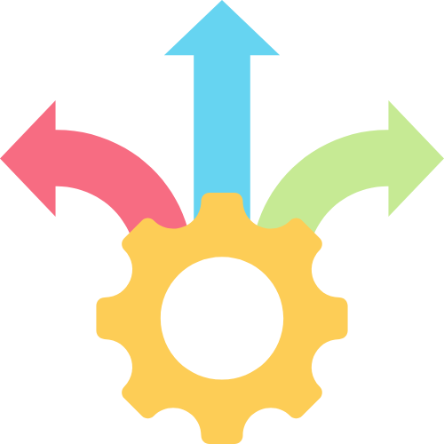
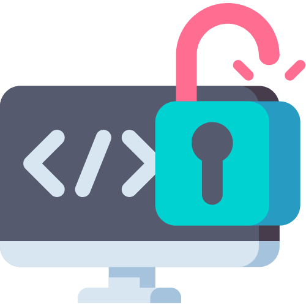
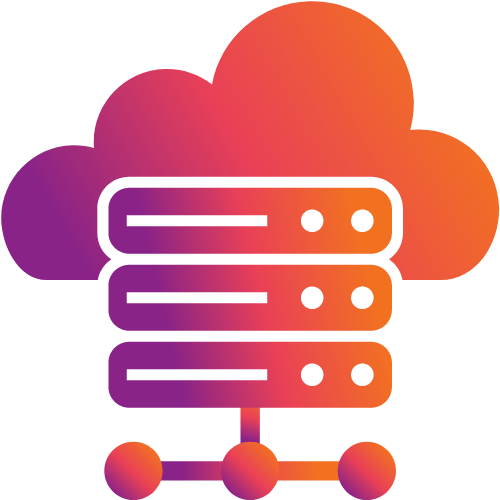
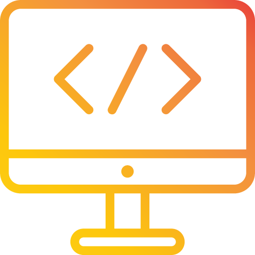

MEAN Improves Easy Isomorphic Coding: In web development, an isomorphic coding can run both in
the server and the client. This repository contains the for an isomorphic application built with Nuxt,
and Node. Nowadays, mostly developers are exploring the most recent technologies that would be utilized
web development and web applications.

MEAN Stack Flexibility
The most fundamental viewpoint of MEAN stack development is its flexibility. It is
highly flexible in coding, testing.

MEAN is Open Source and Cost-effective
One of the biggest hindrances in app development is the cost involved in the process.
All MEAN stack components are open-source and its updated time to time and allow developers to
change the code according to their requirement. NodeJS has JavaScript modules. Deployment cost
is reduced by using MEAN Stack is cheaper, components are free and can run on any server.
MEAN is User-friendly and Provides Excellent UI
Angular is well-known for its outstanding user-interface (UI) and user experience (UX)
in any web/mobile app. Thus many of the popular brands you love use Angular.JS, as it is
considered as the best front-end technology. It also supports MVC (Model-View-Controller)
architecture because of which it provides quality user-interfaces.
MEAN is Re-usable and Speedy
Node.js is speedy and capable as it has non-blocking architecture. Angular.js is an
open-source JavaScript that offers maintenance, testability, and reusability. Powerful
directives of this framework progress into great testability and domain-specific language.

MEAN is Well-suited to the Cloud
MEAN is not just a platform that allows web development but it also enables to host
app on the cloud to test it once the development process is done. Also, it is easy to switch
code-base from one framework to another without any complication. Easy-to-deploy cloud-hosting
application, stack can be right match.

MEAN makes it easier for developers
It has global community support, support from various industry leaders as well as
different communities such as AngularJS, NodeJS, and MongoDB.